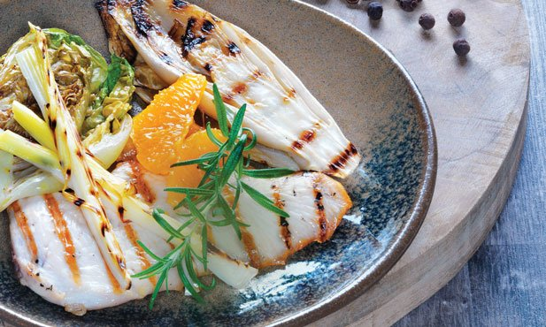

Recomendação do Dia
Ingredientes
- Peito de frango
- Legumes assados
- Azeitonas
- Tomates secos
- Molho de ervas
- Sal e pimenta
Avisos ao Consumidor
- Pode haver vestigios de cascas ou outros produtos alimentares.
- Recomendamos que seja servido com algum limão sobre a carne.
Preço: €15.00 /dose